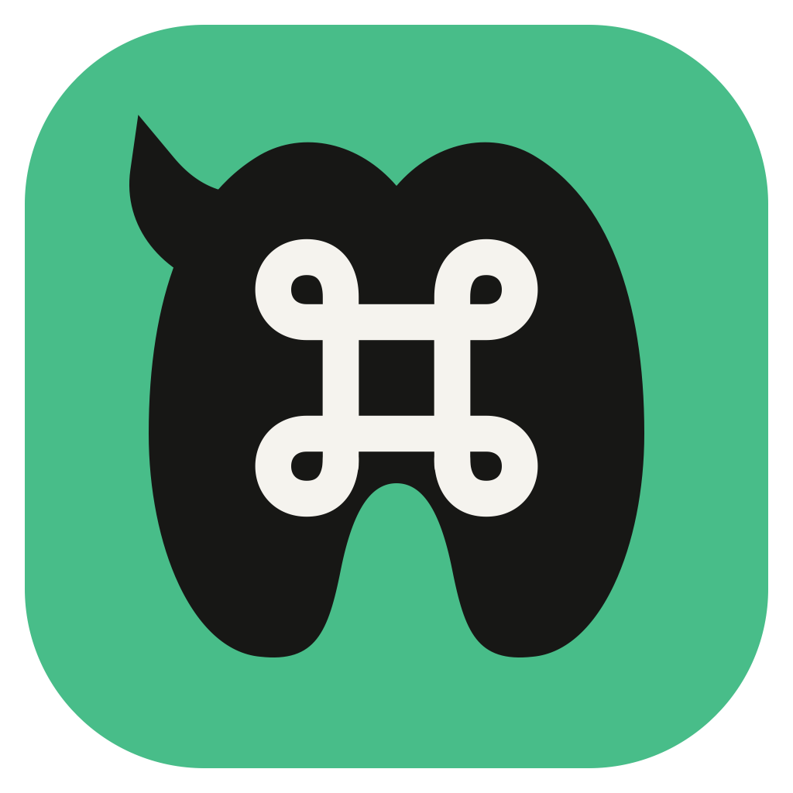

One test: can the mark be identified in under a second at 32px? The mechanical illustration fails because its gears, gradients, speech bubble, goggles, straps, and face all collapse into the same visual noise. These directions keep the donkey pun and remove everything that is not identity.

Current — illustration, not icon
Recognizable at 1024px, ambiguous below 64px, nearly unidentifiable at 32px. Too many equal-weight details and no dominant silhouette.
Joint pick · unmistakable donkey
01 · Burro
Splayed ears kill the rabbit read; a tapered face kills the cow read; the large pale muzzle is the donkey signature.
643216
One animal, one silhouette hierarchy. Flat Workass green, pale muzzle, warm-neutral tile. The mark fills the tile and remains a donkey when its micro-detail disappears.
Rejected · generic mammal
02 · Profile
A single 3/4-profile silhouette keeps the long ears and makes the muzzle unmistakably equine rather than rabbit-like.
643216
4 visible shapes including the tile. Reads “donkey” fastest, but its asymmetry needs careful optical centering.
Rejected · cow/pig at small size
03 · Chat Burro
The donkey’s head is also a speech bubble. It explains agentic chat without adding a separate terminal badge.
643216
8 visible shapes including the tile. Most explicit about the product, but the speech-tail is a second concept and becomes subtle at 16px.
Design thesis: own one silhouette. Warm-black squircle, Workass green donkey, pale muzzle. No gears, goggles, belts, glow, terminal bubble, metallic rendering, gradients inside the mark, or tiny outlines. The preferred icon should survive a one-color silhouette test before any polish is added.